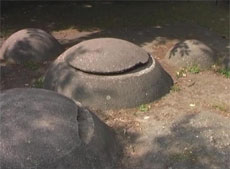

|
VIELFALT ERFORSCHEN
Rainer Knepperges, Katrin Leuthe | D 2008 | 2 Min.
Material: DV
Format: DVD
Originalsprache: Deutsch
Drehbuch: Rainer Knepperges, Katrin Leuthe
Kamera: Rainer Knepperges
Ton: Rainer Knepperges
Schnitt: Rainer Knepperges
Produktion: Rainer Knepperges
Vertrieb: Rainer Knepperges
Rainer Knepperges und Katrin Leuthe widmen sich in VIELFALT ERFORSCHEN einer bedrohten Spezies, die ihren Lebensraum bevorzugt in Großstädten findet: den dekorativen Betonelementen. Seien es abstrakt geformte Parkhindernisse oder Tieren nachempfundene Spielplatzverschönerungen, Knepperges und Leuthe sehen sie durch Glas und Holz in ihrem Habitat bedrängt. "Noch empfinden wir dieses Verschwinden nicht als Verlust", kommentiert der Sprecher in einem Tonfall, als verkünde er gerade das drohende Aussterben der Eisbären. Und nicht zuletzt auf derartige in Tierdokumentationen gern gepflegte Betroffenheitspflicht zielt diese Satire. - Sven von Reden, Internationale Kurzfilmtage Oberhausen
"Ein didaktischer Exkurs." - Ulrich Mannes, Sigi Götz Entertainment
Rainer Knepperges, geb. 1965 in Korschenbroich, war Mitbegründer des "Filmclub 813" in Köln, Teil der legendären "Kölner Gruppe" und Herausgeber der Filmzeitschrift Gdinetmao. 2005 drehte er zusammen mit Christian Mrasek seinen ersten Langfilm Die Quereinsteigerinnen. Er veröffentlichte Texte zum Kino u.a. in Cargo, 24 und Sigi Götz Entertainment. Er lebt und arbeitet als Filmemacher und Autor in Köln.
Filme (Auswahl): Leben und Werk 1990 | Joachim Krippo 1991 | Das nasse Grab der Grenzbanditen (zusammen mit Christian Mrasek) 1997 | Tour Eiffel (zus. mit Chr. Mrasek) 2000 | Mitte 30 2001 | Die Quereinsteigerinnen (zus. mit Chr. Mrasek) 2005 | Die Zukunft des Körpers, Episode Dr. Erich Lusman (Omnibusfilm) 2007 | Serge Rippenanker 2008 | Vielfalt erforschen (zus. mit Katrin Leuthe) 2008
Katrin Leuthe, geb. 1967, lebt und arbeitet als Lehrerin in Köln. Vielfalt erforschen ist ihre erste Zusammenarbeit mit Rainer Knepperges.
Film: Vielfalt erforschen (zusammen mit Rainer Knepperges) 2008
zurück
|